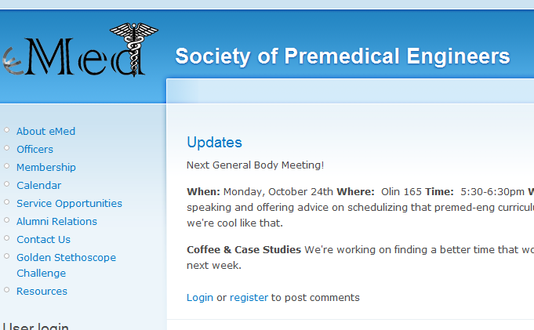

Software engineering intern working on the privacy team that was responsible for the August 2011 privacy revamp. Worked on all areas of the website, including mobile, photos, tagging and frontend. Focused primarily on tag approval and wall post privacy.
Corre Group
December 2010 - May 2011
Lead software engineer at financial services startup that analyzes hedge funds and builds summary statistics. Responsible for designing and building the web platform in Ruby on Rails/MySQL to calculate and display statistics.
Reality Check Network
July 2008 - May 2011Software developer at web hosting company that hosts a few of the largest sites on the internet. Designed and built the Customer Resource Management system, which integrates all parts of the business together, from server provisioning and network topology to billing and a customer control panel. Learned how to administer servers as well as design a large application with many users.
eMed
2010 - 2012 Lead web developer for designing website to provice support to Cornell engineering pre-medical students. Set up and designed the main website. Additionally, coded extra modules pertaining to requirements.